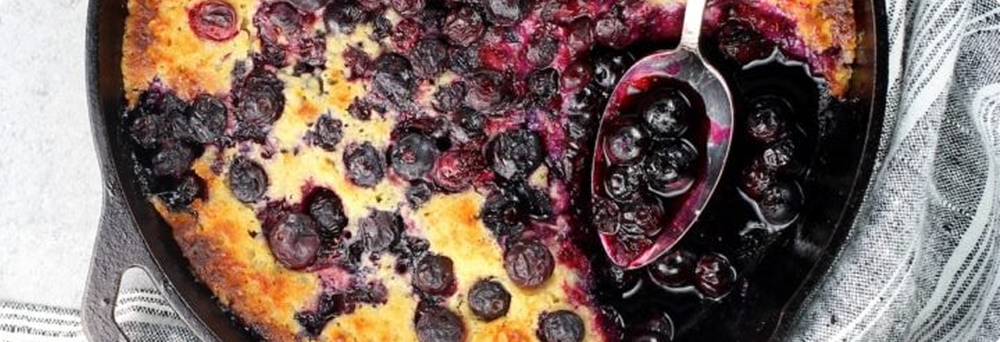

When you are making recipes with beautiful fresh blueberries, you'll want to keep a few things in mind.
Fresh blueberries are at their best from May until early October.
Look for firm, deeply colored berries that are uniform in size. Blueberries will stay fresh
for about 7 days. Before extra berries go bad, you can freeze them. To freeze blueberries, arrange
them on a baking sheet in a single layer to remove external moisture for a couple of hours.
Then put them in a plastic bag or other container. They should last in the freezer until blueberry season next year!

This blueberry cobbler is an excellent light dessert that isn't too sweet! This recipe works great
with all types of berries. Serve with whipped cream or vanilla ice cream.
Makes 6 Servings
INGREDIENTS
3 cups blueberries
⅓ cup orange juice
3 tablespoons sugar
⅔ cup all-purpose flour
¼ teaspoon baking powder
1 pinch salt
½ cup butter, softened
½ cup sugar
1 egg
½ teaspoon vanilla extract
Prep Time: 20 mins
Cook Time: 35 mins
Total Time: 55 mins
DIRECTIONS
- Preheat oven to 375F degrees.
- Mix blueberries, orange juice, and 3 tablespoons sugar in an 8-inch square baking dish.
- Mix flour, baking powder, and salt in a small bowl.
- Cream butter and ½ cup sugar in a large bowl until light and fluffy. Beat in egg and vanilla.
Gradually add flour mixture, stirring just until ingredients are combined.
- Drop spoonsful of batter over the blueberry mixture, covering as much filling as possible.
- Bake in the preheated oven until topping is golden brown and filling bubbles, 35 to 40 minutes.
- Serve and enjoy with vanilla ice cream!